WWDC 2021: Meet AsyncSequence
Find hereafter a detailed summary of the above named video that belongs to a taxonomy of some WWDC footages.
The original video is available on the official Apple website (session 10058).
"Iterating over a sequence of values over time is now as easy as writing a “for” loop. Find out how the new AsyncSequence protocol enables a natural, simple syntax for iterating over anything from notifications to bytes being streamed from a server. We'll also show you how to adapt existing code to provide asynchronous sequences of your own."
The various contents of this speech are indicated hereunder:
Most of the illustrations are parts of the Apple presentations and may be available at the Resources section inside the Overview sheet of each video.
Hereafter, the underlined elements lead directly to the playback of the WWDC video at the appropriate moment.
Introduction #
AsyncSequence suspends on each element and receives values asynchronously while completing with success or stopping when an error is thrown.
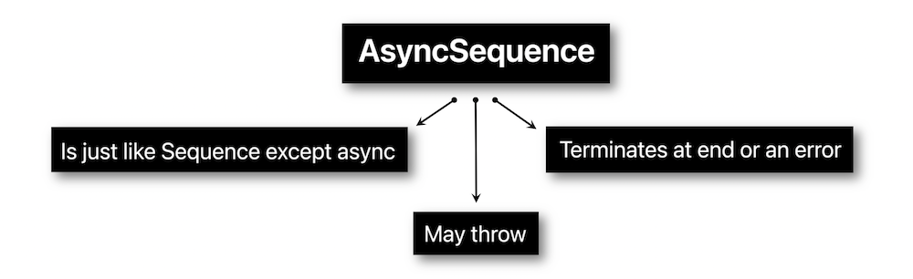
This asynchronous behavior comes from an usual sequence whose iterator process is altered by the compiler with the new async/await syntax commonly used in Swift concurrency.
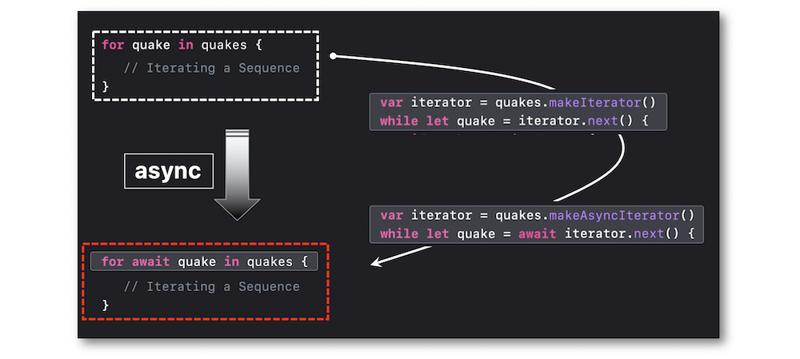
The break and continue keywords also work in async sequences.
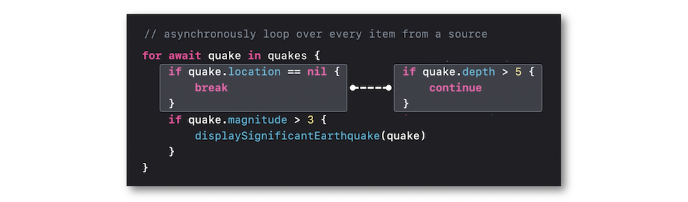
Cancelling an iteration may also be scheduled when desired by wrapping it in a Task.

APIs #
Some new AsyncSequence APIs have been introduced to point out the simplicity of their implementation in different areas:
-
File: the combination of the
linesproperty with thebytesproperty of FileHandle provides a nice asynchronous reading of bytes‚üπ¬†üé¨
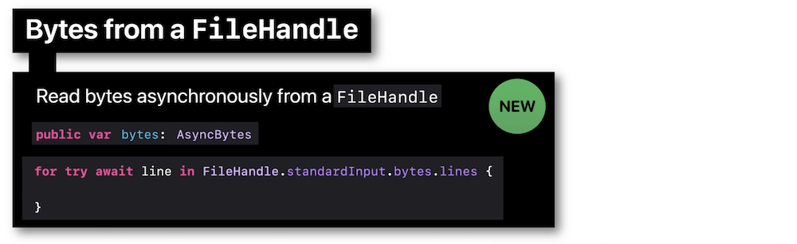 -
URL: contents of a URL can be easily returned thanks to the
linesproperty‚üπ¬†üé¨

-
URLSession: using an async sequence with the new bytes function is a quick way to get bytes in networking‚üπ¬†üé¨
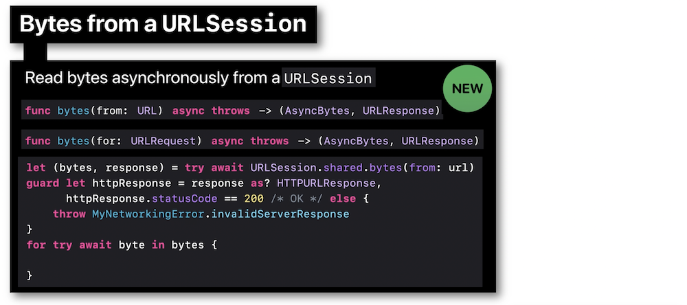 -
Notification: the NotificationCenter can also be implied in Swift Concurrency for awaiting notifications ‚üπ¬†üé¨
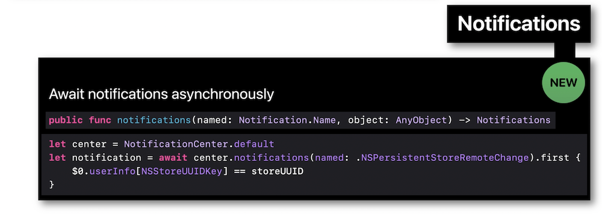
Many methods applied on Sequence have now an asynchronous counterpart for working with AsyncSequence.
Thus, they can be used to turn a complexed logic into an easier one so as to get values from async sequences.
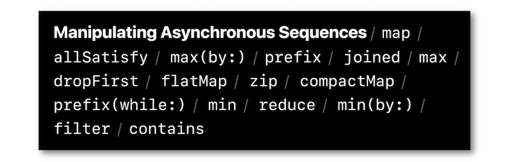
Adopting AsyncSequence #
AsyncStream is the easiest way to create one's own asynchronous sequences for callbacks that are called multiple times and some delegates that both are good candidates for async sequences.
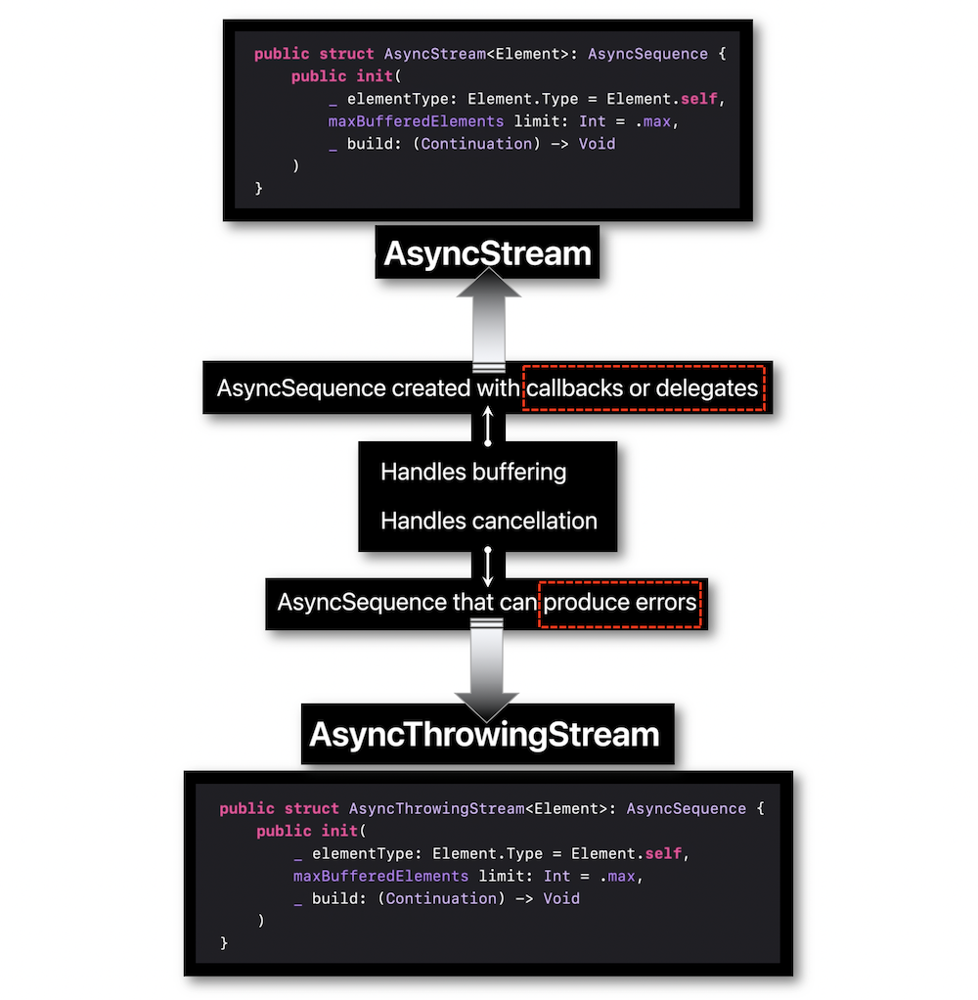
Customizing an async sequence is facilitated by the functions and variables of the continuation structure.
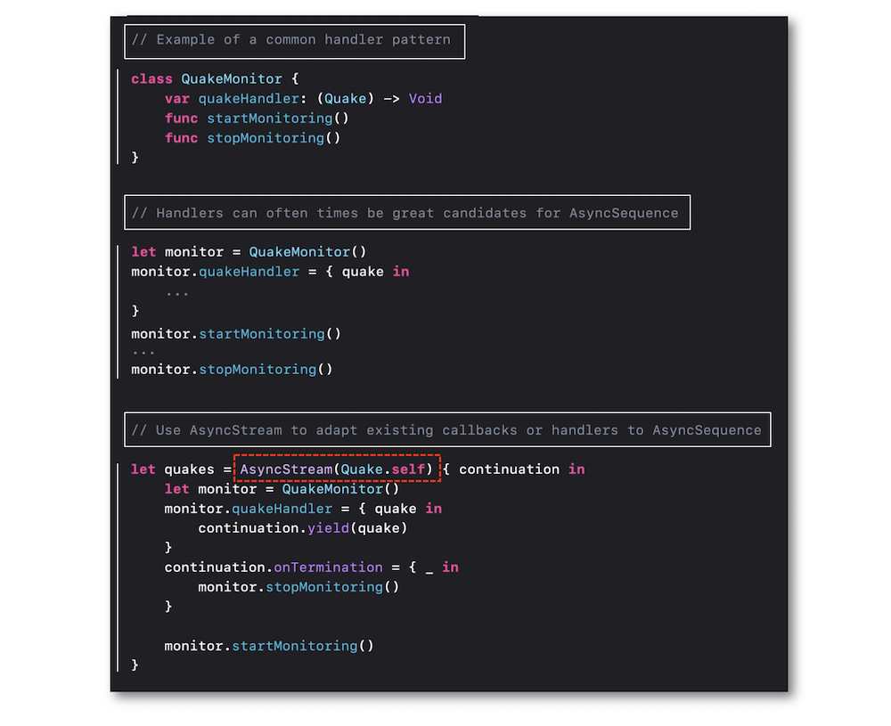
The for-await-in syntax provides a significant flexibility regarding the async sequences created thanks to the Asyncstream generic type.
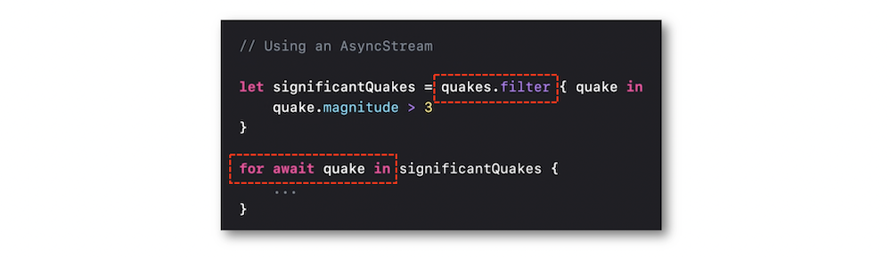
Example #
An example of async sequence of lines is introduced to point out the responsiveness when each line is received while showing off the possible use of regular sequences with the async/await syntax.
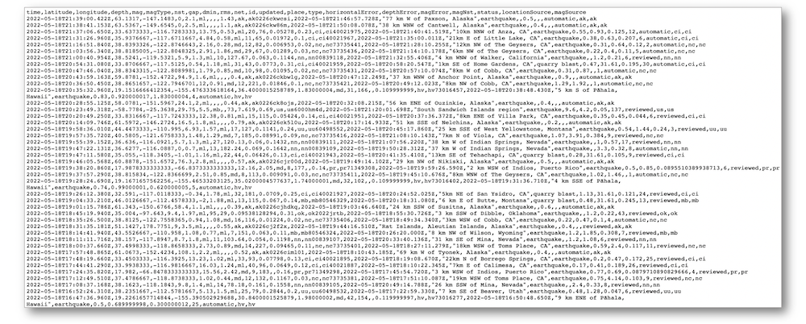
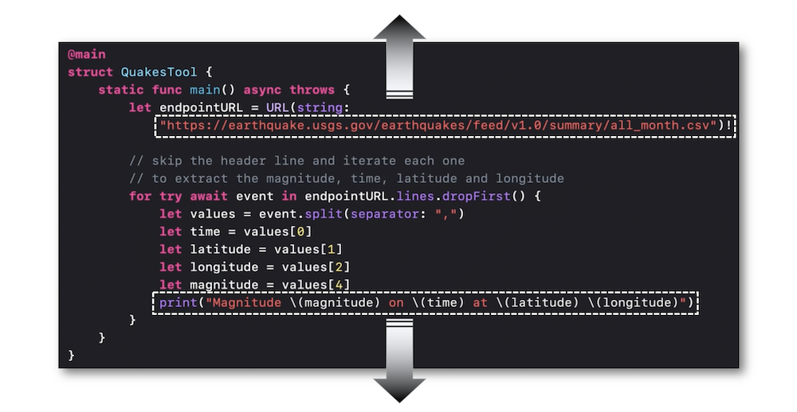
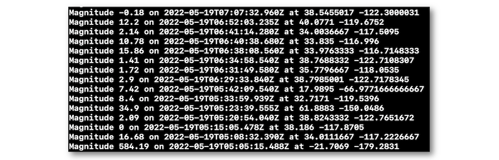
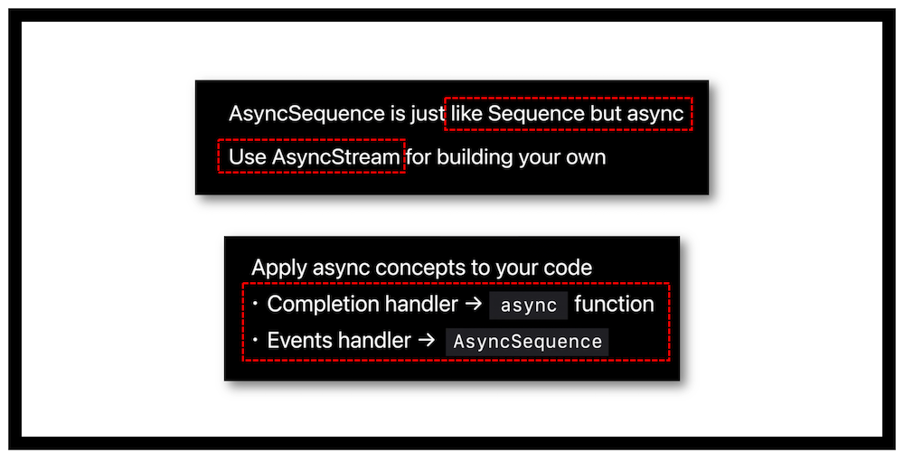